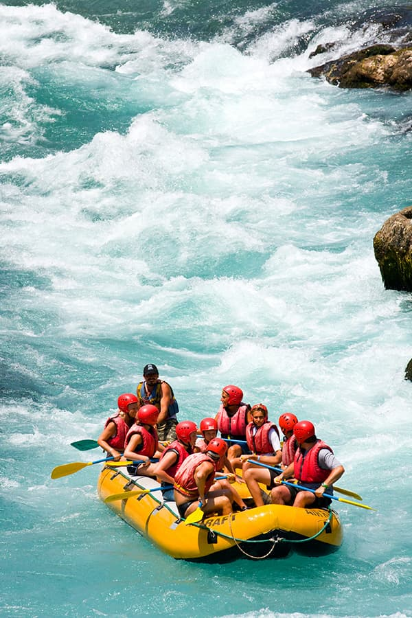
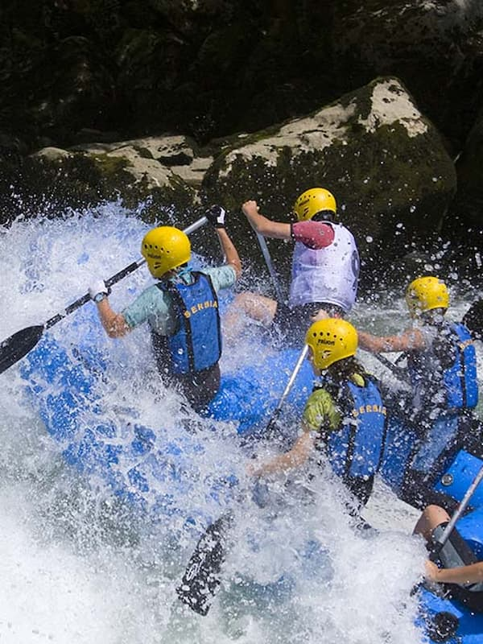

Contact Us!

Our Water Rafting Trips
River Explorer Adventure
Beginner | 2–3 Hours | Ages 8+
Perfect for first-time rafters and families, the River Explorer Adventure offers a relaxing introduction to whitewater rafting. Paddle through gentle rapids while enjoying beautiful river scenery, rocky landscapes, and calm stretches of water.
Our experienced guides will teach you the basics of paddling, teamwork, and river safety before heading downstream.


Whitewater Rush
Intermediate | 4–5 Hours | Ages 12+
Whitewater Rush combines fast-moving water, challenging rapids, and scenic stretches of river into an unforgettable half-day adventure.
Work together with your rafting team as you navigate waves, sharp turns, and exciting sections of whitewater. Between the rapids, you can relax and enjoy the surrounding scenery.
Extreme Rapids Expedition
Advanced | Full Day | Ages 16+
For experienced adventurers looking for a serious challenge, the Extreme Rapids Expedition delivers a full day of action on the river.
Prepare for powerful currents, large waves, technical rapids, and demanding sections that require strong teamwork. Calm sections between the rapids provide time to rest and enjoy the beautiful surroundings.
